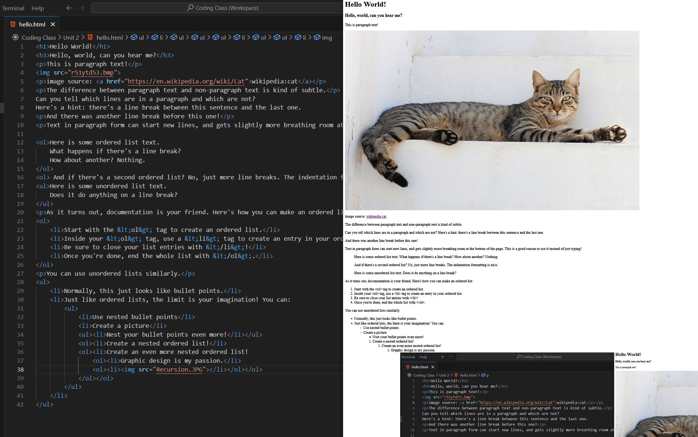

Hello World!
Hello, world, can you hear me?
This is paragraph text!
image source: wikipedia:cat
The difference between paragraph text and non-paragraph text is kind of subtle.
Can you tell which lines are in a paragraph and which are not?
Here's a hint: there's a line break between this sentence and the last one.
And there was another line break before this one!
Text in paragraph form can start new lines, and gets slightly more breathing room at the bottom of the page. This is a good reason to use it instead of just typing!
Here is some ordered list text.
What happens if there's a line break?
How about another? Nothing.
And if there's a second ordered list? No, just more line breaks. The indentation formatting is nice.
Here is some unordered list text.
Does it do anything on a line break?
As it turns out, documentation is your friend. Here's how you can make an ordered list:
- Start with the <ol> tag to create an ordered list.
- Inside your <ol> tag, use a <li> tag to create an entry in your ordered list.
- Be sure to close your list entries with </li>!
- Once you're done, end the whole list with </ol>.
You can use unordered lists similarly.
- Normally, this just looks like bullet points.
- Just like ordered lists, the limit is your imagination! You can:
- Use nested bullet points
- Create a picture
- Nest your bullet points even more!
- Create a nested ordered list!
- Create an even more nested ordered list!
- Graphic design is my passion.
- 